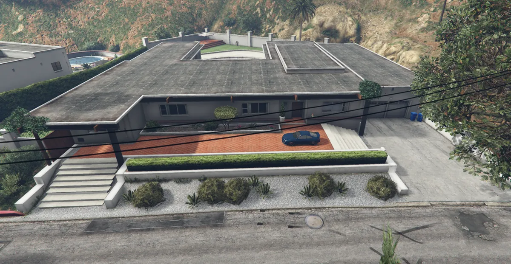
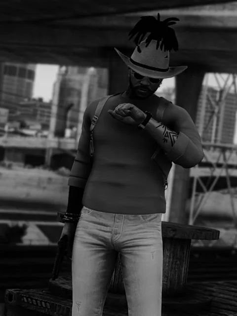
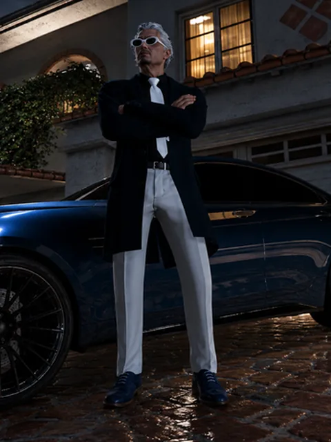
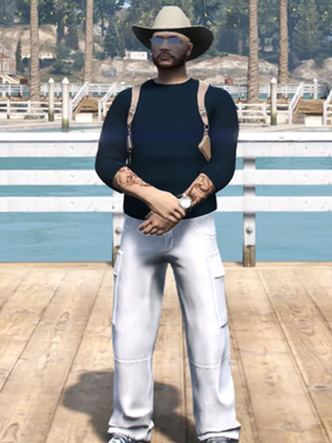
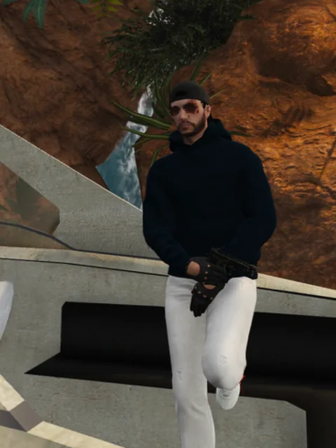
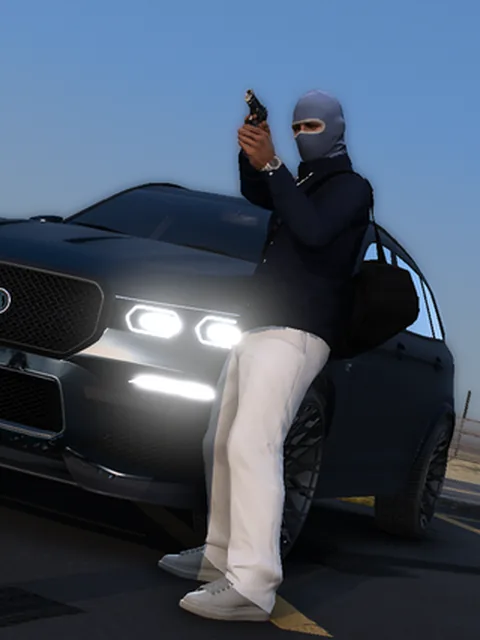
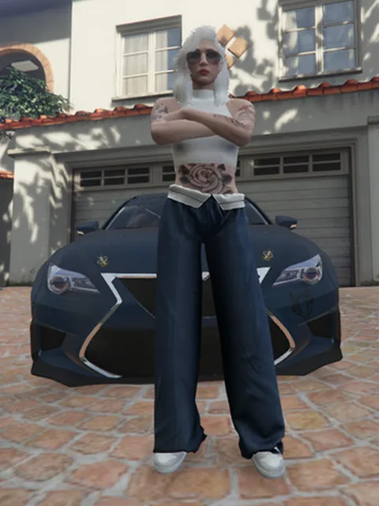
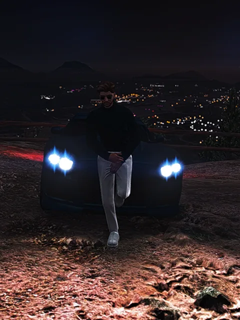
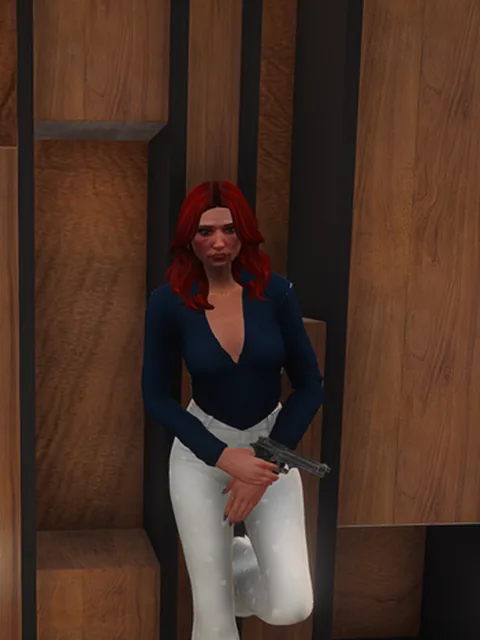

01
Le gentleman
De Londres, Njuts a conservé cette élégance britannique : propre, classe, discrète et maîtrisée. Le gentleman avant le gangster.
Los Santos · 06:00
Pendant qu'ils dorment, nous préparons demain
Le gentleman avant le gangster. Une poignée de main plutôt qu'un affrontement, une négociation plutôt qu'une menace. Lorsque San Andreas s'éveille, la 6AM travaille déjà.
De Londres à Vinewood
L'histoire de la 6AM commence avec Njuts. Né à Londres, il perd très jeune ses parents, agents britanniques engagés dans la lutte contre le trafic de drogue, victimes d'une embuscade meurtrière.
Il quitte alors Londres pour San Andreas, avec une colère qu'il transforme en détermination. Il rejoint les Emerald Syndicate et y gravit les échelons jusqu'à devenir bras droit — mais lorsque les intérêts personnels prennent le dessus sur le collectif, Njuts décide de partir.
Avec deux proches, il fonde un groupe différent, bâti sur la loyauté, le respect et la patience.
Chaque matin, les trois fondateurs se retrouvent à 6 heures. Pendant que la ville dort, ils parlent stratégie, opportunités et avenir : 6AM devient leur identité. Un principe naît — préparer demain pendant que les autres dorment.
Puis les fondateurs disparaissent, un à un : trahison, départ, abandon. Deux des trois quittent le navire. Njuts reste, et avec lui, la 6AM.
De Roxwood jusqu'à Vinewood, le groupe grandit, gagne en influence et ouvre des portes autrefois inaccessibles. Car la 6AM n'a jamais été une histoire de personnes : c'est une philosophie, et c'est un héritage.
« Les fondateurs ont changé. L'heure, elle, est restée. »
Classe, discret, maîtrisé
De Londres, Njuts a conservé cette élégance britannique : propre, classe, discrète et maîtrisée. Le gentleman avant le gangster.
Le dialogue avant la menace, la négociation avant l'affrontement, la stratégie avant l'impulsivité. La violence n'est jamais recherchée.
La 6AM n'a pas besoin de faire du bruit pour imposer le respect. Elle construit en silence, avance avec patience et laisse les résultats parler.
Le calme n'est jamais une faiblesse. Si les armes doivent sortir, ce sera en dernier recours — et jamais sans conséquence.
« Pendant qu'ils dorment, nous travaillons. Pendant qu'ils regardent aujourd'hui… nous préparons déjà demain. »
Derrière deux portails noirs

Bas de Vinewood
Deux hauts portails noirs, des activités à l'abri des regards. Longtemps inaccessible, elle a pu être négociée grâce à nos relations avec les Muertenos et à notre réputation d'indépendants sérieux et déterminés.
Membres influents du bloc B de la prison fédérale, leaders des plus grosses organisations et des gangs de la ville : beaucoup y ont déjà négocié, et tous sont repartis impressionnés.
À ses débuts, Njuts habitait sur le trottoir d'en face. Il contemplait déjà la bâtisse avec une seule idée en tête : un jour, elle sera à moi. Ce jour est arrivé.

À quelques rues
Dès leur arrivée, Hugo et Angel Delawid ont mis en commun leur patrimoine pour renforcer l'organisation. Fidèles à leur réputation de gens prévoyants, les 6AM ont voulu un second point de chute, distinct de leur résidence principale.
Une véritable réserve stratégique : plutôt que d'attendre qu'une situation se présente, la 6AM anticipe les scénarios et dispose à l'avance des moyens d'y répondre.
Et quelques autres adresses, que nous gardons pour nous.
Chacun garde son style, tant qu'il reste propre, sobre et aux couleurs de la 6AM.
Chacun connaît sa place
Développent le réseau de vente, trouvent de nouveaux contacts et sécurisent les transactions.
Font leurs preuves, apprennent le code et gagnent la confiance de la famille.

Dossier · Confidentiel
Lord LeadAncien membre des Emerald Syndicate, Njuts s'en éloigne pour bâtir avec deux proches un projet correspondant à sa vision : la 6AM.
Malgré la disparition des autres fondateurs et une tentative de prise de pouvoir, il maintient le cap et prend seul la tête du groupe.
Sous sa direction, la 6AM cultive une identité britannique : classe, discrète et stratégique, où la négociation prime sur la violence et où chaque décision prépare la suivante.
Calme, ambitieux et protecteur, Njuts poursuit un objectif : faire de la 6AM une famille respectée et durable. Pendant qu'ils dorment, il prépare demain.

Dossier · Confidentiel
Duke Co-LeadNé et élevé à Los Santos dans un environnement difficile, Hugo apprend très jeune à se débrouiller seul.
Calme, méfiant et réfléchi, il évolue dans la rue tout en privilégiant la discrétion et la loyauté plutôt que la violence inutile.
Après plusieurs trahisons, il comprend que l'indépendance a ses limites et découvre la 6AM, dont les valeurs de confiance, de respect et de protection des siens correspondent aux siennes.
Loyal, protecteur et déterminé, Hugo trouve dans la 6AM la famille qui lui manquait et souhaite désormais la protéger, la faire grandir et construire avec elle quelque chose de durable.

Dossier · Confidentiel
Chancellor Bras droitOriginaire du Texas, Francis grandit dans un environnement familial difficile et trouve très jeune refuge dans le rodéo. Entre compétitions, blessures et mauvaises fréquentations, sa vie finit par s'effondrer jusqu'à lui faire perdre son ranch, ses chevaux et ses derniers repères.
Sans véritable attache, il prend la route vers Los Santos avec l'espoir d'un nouveau départ, et tente progressivement de reconstruire ce qu'il a perdu.
Dur, déterminé et profondément marqué par son passé, Francis voit dans la 6AM l'occasion de retrouver une famille, un objectif et quelque chose qui mérite enfin d'être construit.

Dossier · Confidentiel
Marshal LieutenantAyant grandi dans un environnement difficile, Amado a rapidement appris l'importance de la confiance, du respect et de la débrouillardise.
Arrivé à Los Santos avec l'ambition de se construire un avenir, il comprend vite l'importance de bien s'entourer. Sa rencontre avec la 6AM lui fait découvrir un groupe soudé, organisé et ambitieux : il rejoint la famille et gagne progressivement la confiance de ses membres.
Calme, loyal et déterminé, Amado préfère laisser ses actes parler pour lui et souhaite aujourd'hui gravir les échelons tout en construisant sa propre réputation.

Dossier · Confidentiel
Gentleman DealerOriginaire de Birmingham, Théo grandit dans une famille modeste jusqu'à ce qu'une injustice brise sa confiance envers les institutions.
Après la disparition de son père et l'éloignement de sa fratrie, il quitte l'Angleterre pour Los Santos, où il cherche à repartir de zéro. Il y découvre la 6AM, un groupe d'Anglais qui devient rapidement sa nouvelle famille.
Calme, discret et réfléchi, il préfère observer et agir au bon moment. Aujourd'hui, il souhaite faire ses preuves et participer à la construction de l'avenir de la 6AM.

Dossier · Confidentiel
Gentleman DealerAvant de rejoindre la 6AM, Angel s'est forgé une réputation dans les rues de Los Santos grâce à sa discrétion, son sang-froid et son sérieux. Ses qualités et sa loyauté lui permettent rapidement de gagner la confiance de la famille.
Aujourd'hui, Angel occupe un rôle de dealeuse et de membre de confiance, chargée notamment de développer le réseau de vente, trouver de nouveaux contacts et sécuriser les transactions.
Loyale, discrète et observatrice, elle souhaite devenir une personne indispensable au bon fonctionnement de la famille.

Dossier · Confidentiel
Gentleman DealerOriginaire de Sicile, Thomas arrive à Los Santos avec l'ambition de reconstruire le nom Sano. Son premier objectif, reprendre le Bahamas, se solde par un échec qui transforme profondément sa manière d'avancer : désormais, il veut construire plutôt que conquérir.
Il retrouve dans la 6AM une philosophie qui lui correspond : discrétion, négociation, stratégie et patience. Plutôt que d'imposer son nom, Thomas souhaite gagner sa place par ses actes.
Loyal, calme et ambitieux, il rejoint la 6AM pour apprendre, développer son réseau et participer à la construction d'un projet solide et durable.

Dossier · Confidentiel
Gentleman DealerOriginaire de Manchester, Olivia rejoint San Andreas à 22 ans après avoir perdu sa famille dans un tragique accident. Elle y reconstruit progressivement sa vie et s'impose professionnellement grâce à sa détermination.
Elle découvre ensuite les 6AM à travers son fiancé. Après la disparition brutale de celui-ci, quelques jours avant leur mariage, Olivia décide de s'investir pleinement dans le groupe pour honorer sa mémoire.
Déterminée, ambitieuse et investie, elle souhaite contribuer à faire grandir les 6AM et construire quelque chose de durable.
Dossier · Confidentiel
Candidate RecrueOriginaire de Miami, Ash grandit dans un environnement où la confiance se mérite et où les opportunités sont rares. Avec Léon et Franklin Saint, il se fait rapidement une place dans le trafic avant que les rivalités ne rendent la situation trop dangereuse.
Il quitte alors Miami pour Los Santos, déterminé à repartir sur de nouvelles bases. Son expérience de la rue, sa loyauté envers son cercle proche et sa discrétion l'amènent naturellement vers la 6AM, dont il partage la vision : agir avec méthode, rester dans l'ombre et construire sur le long terme.
Dossier · Confidentiel
Candidate RecrueOriginaire du Portugal, Hamid grandit dans un environnement marqué par la pauvreté et apprend très tôt à se débrouiller seul. De petites affaires illégales l'entraînent progressivement dans un milieu plus dangereux, jusqu'à une confrontation qui le force à quitter le pays.
À seulement 18 ans, il arrive à Los Santos avec l'envie de repartir de zéro et de se construire une nouvelle réputation. Sa débrouillardise, sa discrétion et sa volonté de prouver sa valeur trouvent leur place au sein de la 6AM, où l'ambition compte autant que la loyauté.
La 6AM en images
Nos ambitions
Réfléchir avant d'agir, peser le pour et le contre, anticiper chaque réaction : la communication est un pilier de la 6AM. Beaucoup de groupes nous connaissent et veulent travailler avec nous. Certains auraient dit oui à tout — chez nous, chaque décision fait l'objet d'une réflexion mature et responsable.
Il a fallu laisser du temps au temps, laisser grandir nos membres et construire notre renommée. Aujourd'hui indépendants, nous sommes prêts à entrer dans la cour des grands. Place aux actes : faire de la 6AM un groupe dont on ne pourra plus se passer.
Partenariat, contrat, place à la Private Table ou candidature : à la 6AM, tout commence par une discussion bien menée. Présentez-vous sur le Discord, nous prendrons le temps d'y réfléchir.
Rejoindre le DiscordDiscipline · Loyauté · Discrétion · Ambition